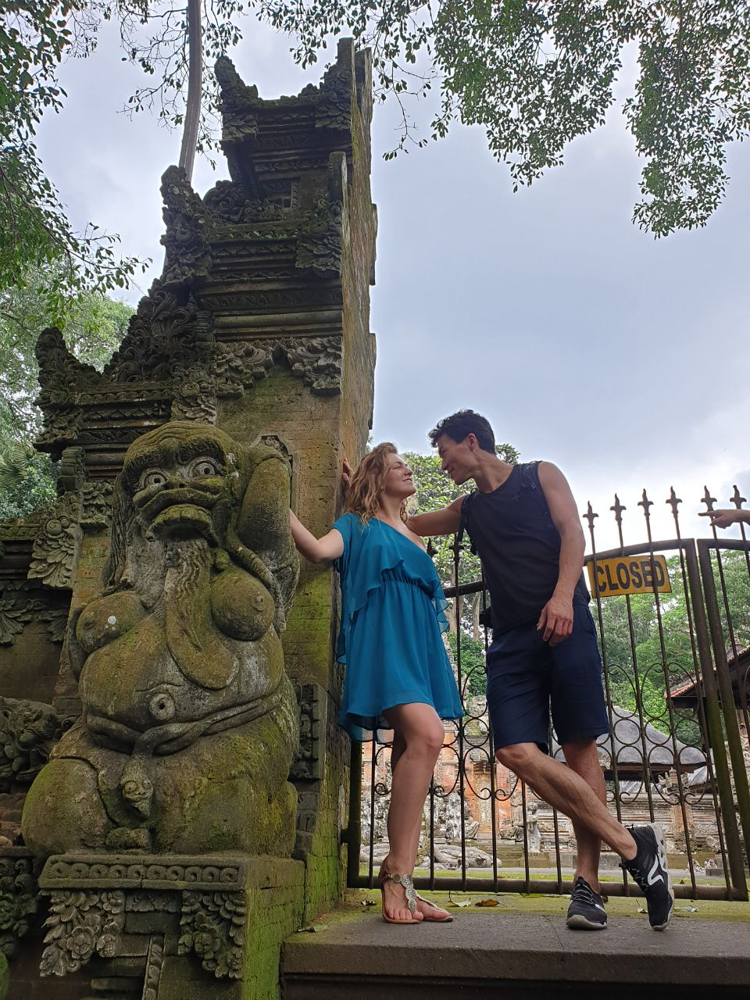
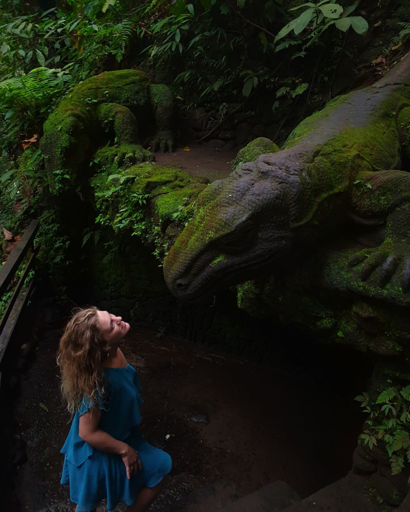
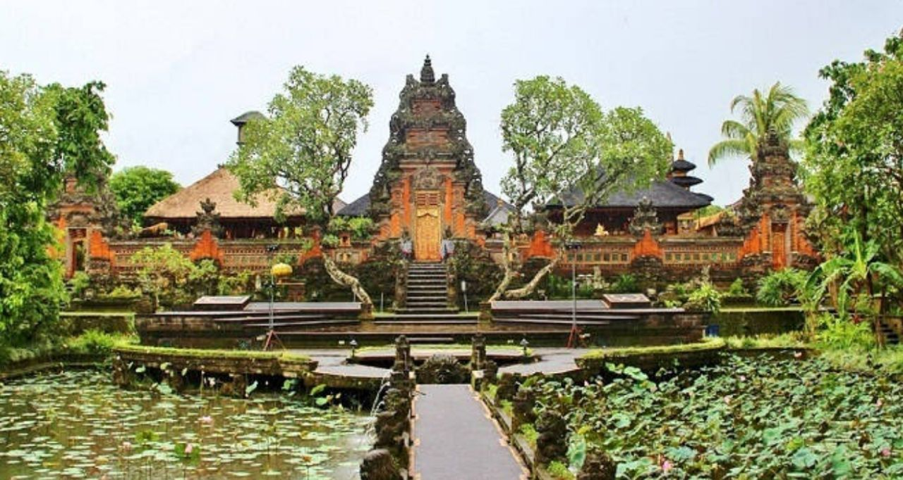

Hey! I'm Natali. I'm still studying at the institute the last year of economics.
I'm 23 years old.
My life changed dramatically this spring. I changed my status and became the wife of a beautiful man. Now we set off on a journey to meet new discoveries and create new self.
"Declare variables,not war"
Sarced Monkey Forest Sanctuary 
The forest is owned and managed by the village of Padang Tegal, whose graveyard and its associated temples are within the grounds. This is why it is considered sacred.
Size: the forest covers approximately 10 hectares (27 acres) with over 115 species of trees.
Money: Revenues from ticket sales go into village coffers to pay for religious ceremonies such as temple festivals and cremations.
Zoological: The monkeys are macaques (Macaca fascicularis), with a population around 600 individuals in five main tribes occupying different areas.
Campuhan Ridge Walk
The Campuhan Ridge Walk is one of the best known trails in Bali. Heading north from Ubud town centre, the 6km round trip along a cobblestone path leads through rice fields up onto the Campuhan ridge between Ubud is sacred rivers Tukad Yeh Wos Kiwa and Tukad Yeh Wos Tengen. It is a delightful, scenic, relatively easy trek that should be on the itinerary of every nature loving tourist.
The trek starts at the Ibah Resort in downtown Ubud. About 10m up the resort driveway, take the narrow laneway that veers off the left towards the temple. At the bottom of the hill, take the path to the right down the stairs into what looks a little like an irrigation ditch. This is the start of the Campuhan Ridge Walk and it is signposted so you will know you are in the right place. From here just follow your nose around the hill and up onto the ridge.
After about 30- 45min depending on how frequently you are stopping to take photos and admire the view, the artists village of Bangkiang Sidem is reached. Keep going on through the village and after about 500m you will reach the Karsa Kafe, a favourite spot for hikers to grab a cold drink or a snack in one of the thatched huts perched out over the lilly ponds.
The Karsa Kafe marks the official end of the Campuhan Ridge Walk but you can keep on going if you like. In fact, the terraced rice fields to the north of the café are some of Ubud is best. Just retrace your steps back to Ubud when you ve had enough.
Ubud Water Palace 
Built in 1901. Let’s start with a bit scary thing. This area was originally built and named as Kolam Dirah, or Dirah Ponds. It was said that people who practised black magic were exiled into the area. The water from Dirah Ponds was used to test if the people really possessed black magic or not. But, in 1909, the king assigned architects to design and expand the complex to be the rest and recreational area for the royal family. Pools were added and buildings were erected until the place was ready to use in 1921. Additional buildings added since then until 1937.
Been ruined for years. The power of nature showed its great power upon its glory and majesty. The massive eruption of Mountain Agung in 1963 and the earthquake 1975 brought down parts of the complex to the ground. After that, the complex remained untouched until the project of restoration in the early 2000s. It finished in 2004 and Taman Ujung Soekasada opened for public.
Balinese – European – Chinese mix on the architecture. For fans of architecture and old buildings, Ujung Water Palace offers more pleasure to them as they discover the influence of Balinese, European, and Chinese architectural traditions throughout the buildings. A relaxing spot for a leisure walk, even in the middle of the day, visitors can explore the paths, stairways, to find amazing spots from where the eyes will be amazed by the view of the park as a whole, panoramic ocean view, or green lush hill.
| Day | Mon | Tue | Wed | Thu | Fri |
|---|---|---|---|---|---|
| 8-8:30 | learn | ||||
| 9-10 | Practice | ||||
| 1-1:30 | Play | ||||
| 3:45-5 | Code | ||||
| 6-6:45 | Discuss |